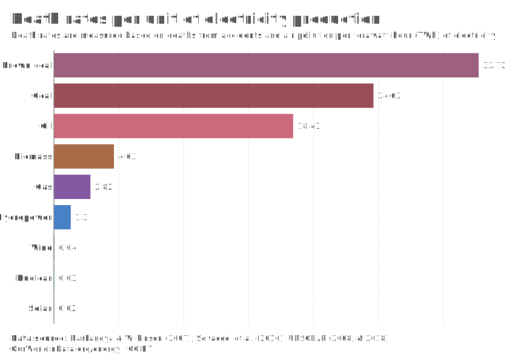

Rhineland Acid Mine Drainage — A Cohesive Explanation
Research Journal — Policy Memo
I. The environmental issue
With a population of 84.5 million citizens the country of
Germany has a substantial
demand for energy (German Federal Statistical Office, 2022).
Much of the electricity production
within the nation is through fossil fuels, with 20.1% of
power being produced through lignite
production (German Federal Statistical Office, 2023).
lignite—also referred to as brown coal—is
a low grade coal. It is inefficient and emits more CO2 when
compared to other types of fossil
fuels (University of Calgary, n.d.). Germany has had a long
standing dependance on lignite, with
it being used in place of wood as a fuel type beginning as
early as the 1600's (D-EITI, 2023). In
1985 Germany hit a historical record of extracting 433
million tonnes of lignite that year.
Lots of brown coal is mined throughout the country but one
region located primarily in
the middle of Germany is the Rhenish coalfields. These coal
fields are home to forests, towns,
and open-pit lignite mines among other things. Open-pit
lignite mining causes many
environmental changes, a specific one being the detrimental
effects on ground and drinking
water through Acid Mine Drainage (AMD). Through the mining
process water is contaminated
and released back into the surrounding environment which
then drains into groundwater stocks.
AMD is a geochemical flow which occurs when atmospheric
oxygen reacts with sulphuric
compounds unearthed during mining, producing acidic and
metal-rich runoff which can be
classified as grey water (Moncur, 2013). This process is an
externality of lignite mining. In the
Rhineland Coalfields the AMD is primarily caused by pyrite
oxidation products including Fe3+ & Fe2+
ions along with
acidic SO42- & H3O+
ions (Wisotzky,
2001). The process is closely related to
a positive feedback cycle wherein green water from
precipitation or blue water from returning
groundwater dissolve pyritic Fe3+, Fe2+,
SO42-, H3O+ ions
into the water lowering the pH
(Wisotzky, 2001). Then secondary minerals that are iron
sulphate containing also begin to enter
the water contributing to further contamination and
acidification exacerbating the problem. Once
this water has been contaminated it continues in its
geochemical flow back into the ground water
or streams where it can then mix with drinking water
supplies (Gerwin et al., 2023). The state of
the groundwater is often quite toxic, and in the mining
districts southern areas, the water is
extremely acidic, sometimes with a pH under 5 (Wisotzky,
2001). The process of AMD is a
common externality of lignite mining in the Rhineland
Coalfields and is detrimental to the
groundwater stocks of the region.
II. Root Cause of the Issue
The root cause of Acid Mine Drainage in the Rhineland
Coalfields is the creation and
exploitation of open-pit mines. This however does not
explain the drivers behind the mining
operations and the use for the lignite once mined. There are
many potential societal activities
responsible for Germany's desire for low grade brown coal.
There are many economic factors
contributing to the need for lignite, but the predominant
driver is a political one. The majority of
the German government (Infratest dimap, 2022, p.12) and
populus (Amann, et al., 2022) have a
biassed risk perception towards clean and green energy. An
individual's risk perception is often
irrational and biassed, and many Germans don't see clean and
safe nuclear energy as worth the
risk, despite the risk being a small one. The belief that
nuclear power should not be used is
deeply ingrained in German culture, and has been held by
many Germans for a long time
(Appunn, 2021b). Prior to October of 2022 the government of
Germany has had a long standing
plan to shut down and decommission their only 3 remaining
nuclear reactors (Appunn, 2021b).
This plan has since changed due to a sudden need for any
energy source due to recent restrictions
on natural gas imports from Russia. Germany had originally
developed the plan to decommission
all nuclear power by 2022 when the Green Party and Social
Democrats won the 1998 elections
(Appunn, 2021b). Opposition to nuclear power was one of the
founding principles of The Green
Party of Germany, and remains a main part of their platform
today. Their founding was driven by
large protests of approximately 200,000 people in 1979, and
others prior (Appunn, 2021a).
Additional insight to the German public's risk aversion to
nuclear energy is demonstrated by a
poll from 1998 where only an astounding 3% of respondents
were in favour of continued
development of Germany's nuclear power industry (Amann, et
al., 2022). Many German citizens
were so opposed to nuclear energy in the late 1900s due to
accidents at 3 Mile Island and more
importantly, Chernobyl, due to its close proximity to
Germany. The government warned
residents against eating fresh produce grown in gardens and
suggested exchanging the sand in
the play pits at playgrounds for fear of radioactive
contamination (Appunn, 2016). This kept the
dangers of nuclear energy at the forefront of concerns for
the German people as it seemed so
immediate. The fear of nuclear energy is very deeply rooted
throughout German society and can
even be seen in the rhetoric of the German government. The
German Federal Office for the
Safety of Nuclear Waste Management (BASE) continuously
refers to all nuclear energy as a
"high-risk technology in Germany" (BASE, 2023) demonstrating
their strong belief that all nuclear power is inherently
dangerous. A further statement from BASE discusses the
knee-jerk
reaction to the Fukushima accident in Japan which was
immediately followed by a "nuclear
moratorium" (BASE, 2023). In March 2011 without much
consideration or deliberation the
so-called nuclear moratorium was put into place. This is
evidently an emotional decision of the
German government which was supported by the German people.
Due to low seismic activity in
Germany there is nearly no risk of an earthquake or tsunami
posed to any of the nuclear reactors
in Germany, making the comparison to Fukushima not ideal
from a risk management
perspective.
The culture of risk in Germany also plays a large role in
public perception, as Europe and
Germany tend to operate on a precautionary principle. This
means a much more conservative
approach is taken towards potential hazards to try to
eliminate as much potential risk as possible.
Even though Germany has set the remaining 3 power plants to
shut down in April of 2023 it still
needs to find a home for the remaining radioactive waste
that will remain (BASE, 2023). The
selection process to find a location to sequester such
high-level nuclear waste (HLW) into deep
geological formations is underway, and a survey was
conducted in 2020 polling Germans on
their trust in various steps of the site selection process
(Seidl, et al., 2022). Across all 3 sample
clusters, trust in the process degraded (Table 1).
Especially illuminating is the 3rd cluster which is
deemed risk-focused and comprises 42% of the ~5000 people
sampled, who in the first stage
accept the procedure with a 4.7/7 confidence which quickly
degrades to a 1.9/5 in the last stage,
demonstrating a large subset of the population is
uncomfortable with the storage of nuclear
waste. Furthermore the researchers had expected a
benefit-oriented cluster, which was notably
absent from the German population, again showing how deeply
rooted the distrust and distaste
for nuclear power is. Due to the risk perception and
political views of the German people, they
are heavily opposed to nuclear power, and with its phase-out
underway they need to transition to
other energies. Due to Europe as a whole having increasingly
limited energy sources of only
~3% globally, one of Germany's few abundant alternatives is
lignite, leading to increased mining
activity (Bezdek, 2014).
Table 1:
German Trust and Acceptance of a procedure to
select a location for long term HLW storage.
(Seidl, et al., 2022)
| Cluster |
Acceptance of procedure
(7-point
response scale) |
Acceptance of siting
decision (7-point
response scale) |
Acceptance of repository
(5-point
response scale) |
| Mean |
Standard Deviation |
Mean |
Standard Deviation |
Mean |
Standard Deviation |
| 1-ambivalent |
5.3 |
1.2 |
4.9 |
1.4 |
2.7 |
1.3 |
| 2-indifferent |
4.8 |
1.1 |
4.6 |
1.2 |
2.8 |
1.0 |
| 3-risk-focused |
4.5 |
1.39 |
3.7 |
1.60 |
1.9 |
0.99 |
III. Solutions to the Environmental Issue
To prevent Acid Mine Drainage in the Rhineland Coalfields
lignite mining must be
greatly decreased, which will not happen unless the German
public accepts alternative energy
sources to lignite. Seeing as the Green Party of Germany is
currently in power, within the present
coalition it would be advisable to recommend green
alternatives. The majority of German energy
is produced through renewable means (Figure 1) including
wind turbines and solar energy
(Appunn, et al., 2019). It would be inadvisable to reverse
this progress by replacing lignite with
yet another fossil fuel. As expected with the
decommissioning of nuclear power its stark decline
can also be seen (Figure 1). It is therefore proposed to
replace the 117 terawatt hours of
electricity from lignite (Appunn, et al., 2019) with
predominantly nuclear power.
Figure 1:
Historic electricity production in Germany by type
of fuel
(Appunn, et al., 2019)

This solution would primarily be a regulatory approach
requiring legislative action to
reduce lignite use. This should begin with a reform of risk
communication around nuclear
energy. Governmental agencies need to stop fear-mongering
and misrepresenting the risks of
nuclear energy, such as BASE when it refers to it as a
"high-risk technology" (BASE, 2023).
Instead the German federal government should harness the
political economy of risk and use it in
favour of nuclear power. Seen in Figure 2 below is a
comparison of multiple energy sources and
their associated death rate per terawatt hour. This
demonstrates the relative risk posed per unit of
electricity produced, meaning for every one terawatt hour of
Brown coal (lignite) based power
32.72 people die due to its impacts on average (Energy for
Humanity, n.d.). Compared to the
0.03 people that die per one terawatt hour of nuclear energy
produced (Energy for Humanity,
n.d.). This is a drastically different narrative than the
one the German government pushes, seeing as fossil fuels
cause an estimated 7 million deaths yearly, while nuclear
power is 350 times safer
than coal (Energy for Humanity, n.d.). The safety of nuclear
power needs to be effectively
communicated to the German public. Perhaps a good way to
begin the potential positive
feedback loop of acceptance of nuclear power would be to
push legislation, adding it to the
school curriculum to teach children about its low risk
levels. Additionally, one might want to run
adverts on television to reach a wider demographic in
addition to school children. With an
increase in nuclear power usage, Germany would finally be
able to transition away from its
dependence on lignite and put a stop to AMD.
Figure 2:
Demonstrates safety of nuclear power relative to
other types of electricity production
of fuel
(Energy for Humanity, n.d.)

References
Gerwin, W., Raab, T., Birkhofer, K., et al. (2023).
Perspectives
of lignite post-mining landscapes
under changing environmental conditions: what can we learn
from
a comparison between
the Rhenish and Lusatian region in Germany?
Environmental Sciences Europe, 35(1).
https://doi.org/10.1186/s12302-023-00738-z
Oei, P.-Y., Hermann, H., Herpich, P., Holtemöller, O.,
Lünenbürger, B., & Schult, C. (2020).
Coal phase-out in Germany - implications and policies for
affected regions. Energy, 196,
117004.
https://doi.org/10.1016/j.energy.2020.117004
Seidl, R., Drögemüller, C., Krütli, P., et al. (2022). The
role of trust and risk perception in current
German nuclear waste management.
Risk Analysis.
https://doi.org/10.1111/risa.13889
Stognief, N., Walk, P., Schöttker, O., & Oei, P.-Y. (2019).
Economic resilience of German lignite
regions in transition. Sustainability, 11(21), 5991.
https://doi.org/10.3390/su11215991
Wisotzky, F. (2001). Prevention of Acidic Groundwater in
Lignite Overburden Dumps by the
Addition of Alkaline Substances: Pilot-scale Field
Experiments.
Mine Water and the Environment, 20(3), 122-128.
https://doi.org/10.1007/s10230-001-8093-0